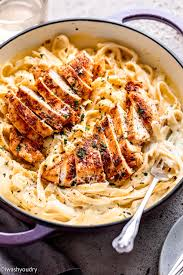

How to make a deliciou chicken alfredo

This recipe will teach you how to make a delicious chicken alfredo
Ingridients
- chicken breast
- parmesan cheese
- heavy cream
- butter
- minced garlick
- parsley
- fettucine pasta
Steps
-
Cook the Chicken:
Season the chicken breasts with salt and pepper.
Heat the olive oil in a skillet over medium heat. Add the chicken and cook for about 6-7 minutes on each side, or until fully cooked. Remove from the pan and let it rest for a few minutes before slicing.
-
Cook the Pasta:
In a large pot, bring salted water to a boil. Add the fettuccine and cook according to package instructions until al dente. Drain and set aside.
-
Make the Alfredo Sauce:
In the same skillet used for the chicken, melt the butter over medium heat. Add the minced garlic and sauté for about 1 minute until fragrant.
Pour in the heavy cream and bring it to a gentle simmer. Stir frequently.
Gradually add the Parmesan cheese, stirring until it's melted and the sauce is smooth. Season with salt and pepper to taste.
-
Combine:
Add the cooked pasta to the sauce and toss to coat evenly. Slice the chicken and place it on top of the pasta.
-
Serve:
Garnish with fresh parsley if desired. Enjoy your homemade chicken Alfredo!